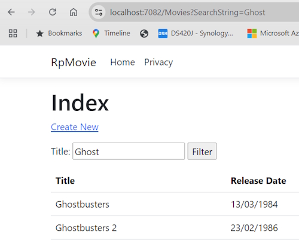

Add search to ASP.NET Core Razor Pages
In the following sections, searching movies by genre or name is added.
Add the following highlighted code to Pages/Movies/Index.cshtml.cs after IList<Movie>:
[BindProperty(SupportsGet = true)]
public string? SearchString { get; set; }
public SelectList? Genres { get; set; }
[BindProperty(SupportsGet = true)]
public string? MovieGenre { get; set; }
In the previous code:
SearchString: Contains the text users enter in the search text box. SearchString has the [BindProperty] attribute.
[BindProperty] binds form values and query strings with the same name as the property. [BindProperty(SupportsGet = true)] is required for binding on HTTP GET requests.
Genres: Contains the list of genres. Genres allows the user to select a genre from the list. SelectList requires using Microsoft.AspNetCore.Mvc.Rendering;
MovieGenre: Contains the specific genre the user selects. For example, "Western".
Genres and MovieGenre are used later.
Warning
For security reasons, you must opt in to binding GET request data to page model properties. Verify user input before mapping it to properties. Opting into GET binding is useful when addressing scenarios that rely on query string or route values.
To bind a property on GET requests, set the [BindProperty] attribute's SupportsGet property to true:
[BindProperty(SupportsGet = true)]
Update the Movies/Index page's OnGetAsync method with the following code:
public async Task OnGetAsync()
{
var movies = from m in _context.Movie
select m;
if (!string.IsNullOrEmpty(SearchString))
{
movies = movies.Where(s => s.Title.Contains(SearchString));
}
Movie = await movies.ToListAsync();
}
The first line of the OnGetAsync method creates a LINQ query to select the movies:
var movies = from m in _context.Movie
select m;
The query is only defined at this point, it has not been run against the database.
If the SearchString property is not null or empty, the movies query is modified to filter on the search string:
if (!string.IsNullOrEmpty(SearchString))
{
movies = movies.Where(s => s.Title.Contains(SearchString));
}
The s => s.Title.Contains() code is a Lambda Expression. Lambdas are used in method-based LINQ queries as arguments to standard query operator methods such as the Where method or Contains. LINQ queries are not executed when they're defined or when they're modified by calling a method, such as Where, Contains, or OrderBy. Rather, query execution is deferred. The evaluation of an expression is delayed until its realized value is iterated over or the ToListAsync method is called. See Query Execution for more information.
Note: The Contains method is run on the database, not in the C# code. The case sensitivity on the query depends on the database and the collation. On SQL Server, Contains`` maps to SQL LIKE, which is case insensitive.
Navigate to the Movies page and append a query string such as ?searchString=Ghost to the URL. For example, https://localhost:5001/Movies?searchString=Ghost. The filtered movies are displayed.
If the following route template is added to the Index page, the search string can be passed as a URL segment. For example, https://localhost:5001/Movies/Ghost.
@page "{searchString?}"
The preceding route constraint allows searching the title as route data (a URL segment) instead of as a query string value. The ? in "{searchString?}" means this is an optional route parameter.

The ASP.NET Core runtime uses model binding to set the value of the SearchString property from the query string (?searchString=Ghost) or route data (https://localhost:5001/Movies/Ghost). Model binding is not case sensitive.
However, users cannot be expected to modify the URL to search for a movie. In this step, UI is added to filter movies. If you added the route constraint "{searchString?}", remove it.
Open the Pages/Movies/Index.cshtml file, and add the markup after Create New in the following code:
<form>
<p>
<label>Title: <input type="text" asp-for="SearchString" /></label>
<input type="submit" value="Filter" />
</p>
</form>
The HTML <form> tag uses the following Tag Helpers:
Form Tag Helper. When the form is submitted, the filter string is sent to the Pages/Movies/Index page via query string.
Save the changes and test the filter.

Search by genre
Update the Movies/Index.cshtml.cs page OnGetAsync method with the following code:
public async Task OnGetAsync()
{
// <snippet_search_linqQuery>
IQueryable<string> genreQuery = from m in _context.Movie
orderby m.Genre
select m.Genre;
// </snippet_search_linqQuery>
var movies = from m in _context.Movie
select m;
if (!string.IsNullOrEmpty(SearchString))
{
movies = movies.Where(s => s.Title.Contains(SearchString));
}
if (!string.IsNullOrEmpty(MovieGenre))
{
movies = movies.Where(x => x.Genre == MovieGenre);
}
// <snippet_search_selectList>
Genres = new SelectList(await genreQuery.Distinct().ToListAsync());
// </snippet_search_selectList>
Movie = await movies.ToListAsync();
}
The following code is a LINQ query that retrieves all the genres from the database.
IQueryable<string> genreQuery = from m in _context.Movie
orderby m.Genre
select m.Genre;
The SelectList of genres is created by projecting the distinct genres:
Genres = new SelectList(await genreQuery.Distinct().ToListAsync());
Add search by genre to the Razor Page
Update the Index.cshtml element as highlighted in the following markup:
<form>
<p>
<select asp-for="MovieGenre" asp-items="Model.Genres">
<option value="">All</option>
</select>
<label>Title: <input type="text" asp-for="SearchString" /></label>
<input type="submit" value="Filter" />
</p>
</form>
Test the app by searching by genre, by movie title, and by both: